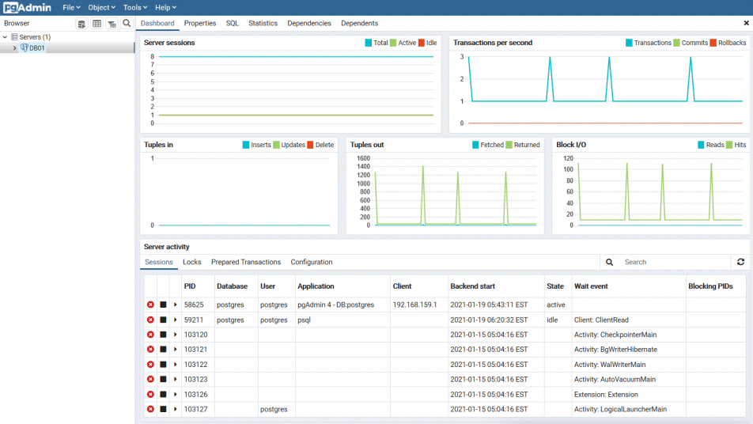

If using pgAdmin, follow the procedure below to close connections.
In the [Browser] pane, click the relevant database server.
Close the client connections that have been in a wait state for an extended period.
Click the [Dashboard] tab. In the [Server activity] section, select the connections that have been in an "idle" or "idle in transaction" state for an extended period. For each of these connections, click to close the session.
